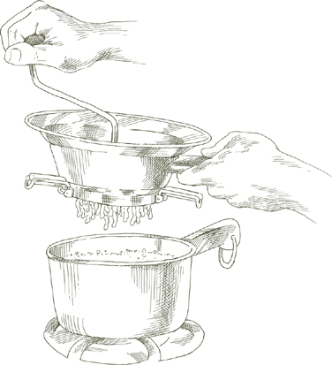
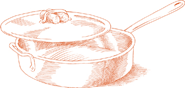

ITALIAN SOUPS owe their character to two elements: the season and the place of origin.
The seasons determine the choice of vegetables, legumes, tubers, and herbs, which, except for those few fish soups that are more seafood courses than true soups, are usually prominently present, either as an accent or as the dominant ingredient.
The place shapes the style. A vegetable soup can tell you where you are in Italy almost as precisely as a map. There are the soups of the south, founded on tomato, garlic, and olive oil, often filled out with pasta; the soups of Tuscany and other central Italian regions that are fortified with beans and supported by thick slices of bread; the soups of the north, with rice; the fragrant ones of the Riviera, with lettuces and fresh herbs.
The one common link Italian soups have, the single distinguishing feature, is their substantiality. Some may be lighter than others; some may be thin; some thick. In some soups the beans or the potatoes may be puréed through a food mill. In no soup, however, is the texture, consistency, weight—the physical identity of the ingredients—wholly obliterated. There are no food processor soups, no cream-of-anything soups in the Italian repertory.
AT HOME, in my native Romagna, this is the way we make minestrone. To seasonal vegetables we add the always available staples—carrots, onions, potatoes—and cook them in good broth over slow heat for hours. The result is a soup of dense, mellow flavor that recalls no vegetable in particular, but all of them at once.
Note that all the ingredients do not go into the pot at one time, but in a sequence that is indicated. By first sautéing the onion you produce the essential underlying flavor, which is then imparted to the other vegetables in turn. While one vegetable is cooking, you can peel and cut up another, a more efficient and less tedious method than preparing all the vegetables at once. If more convenient, you can of course have all the vegetables prepared before starting, but do observe the cooking intervals indicated in the recipe.
For 6 to 8 servings
1 pound fresh zucchini
½ cup extra virgin olive oil
3 tablespoons butter
1 cup onion sliced very thin
1 cup diced carrots
1 cup diced celery
2 cups peeled, diced potatoes
¼ pound fresh green beans
3 cups shredded Savoy cabbage OR regular cabbage
1½ cups canned cannellini beans, drained, OR ¾ cup dried white kidney beans, soaked and cooked as directed
6 cups Basic Homemade Meat Broth, OR 2 cups canned beef broth plus 4 cups water
OPTIONAL: the crust from a 1- to 2-pound piece of parmigiano-reggiano cheese, carefully scraped clean
⅔ cup canned imported Italian plum tomatoes, with their juice
Salt
⅓ cup freshly grated parmigiano-reggiano cheese
1. Soak the zucchini in a large bowl filled with cold water for at least 20 minutes, then rinse them clean of any remaining grit. Trim both ends on each zucchini and dice the zucchini fine.
2. Choose a stockpot that can comfortably accommodate all the ingredients. Put in the oil, butter, and sliced onion and turn on the heat to medium low. Cook the onion in the uncovered pot until it wilts and becomes colored a pale gold, but no darker.
3. Add the diced carrots and cook for 2 to 3 minutes, stirring once or twice. Then add the celery, and cook, stirring occasionally, for 2 or 3 minutes. Add the potatoes, repeating the same procedure.
4. While the carrots, celery, and potatoes are cooking, soak the green beans in cold water, rinse, snap off both ends, and dice them.
5. Add the diced green beans to the pot, and when they have cooked for 2 or 3 minutes, add the zucchini. Continue to give all ingredients an occasional stir and, after another few minutes, add the shredded cabbage. Continue cooking for another 5 to 6 minutes.
6. Add the broth, the optional cheese crust, the tomatoes with their juice, and a sprinkling of salt. If using canned broth, salt lightly at this stage, and taste and correct for salt later on. Give the contents of the pot a thorough stirring. Cover the pot, and lower the heat, adjusting it so that the soup bubbles slowly, cooking at a steady, but gentle simmer.
7. When the soup has cooked for 2½ hours, add the drained, cooked cannellini beans, stir well, and cook for at least another 30 minutes. If necessary, you can turn off the heat at any time and resume the cooking later. Cook until the consistency is fairly dense. Minestrone ought never to be thin and watery. If you should find that the soup is becoming too thick before it has finished cooking, you can dilute it a bit with some more homemade broth or, if you started with canned broth, with water.
8. When the soup is done, just before you turn off the heat, remove the cheese crust, swirl in the grated cheese, then taste and correct for salt.
Ahead-of-time note  Minestrone, unlike most cooked vegetable preparations, is even better when reheated the following day. It will keep up to a week in a tightly sealed container in the refrigerator.
Minestrone, unlike most cooked vegetable preparations, is even better when reheated the following day. It will keep up to a week in a tightly sealed container in the refrigerator.

DURING Milan’s hot summers, the trattorie make this minestrone first thing in the morning, pour it into individual soup plates, and display it on a table by the entrance alongside such other likely specialties of the day as an assortment of crisp vegetables for a pinzimonio, a cold poached bass, a Parma ham with sweet cantaloupes or, in late summer, with ripe, honey-oozing figs. By twelve-thirty or one o’clock, when the first lunch patrons are seated, the minestrone will have reached precisely the right temperature and consistency.
Because the flavor of vegetable soup improves upon reheating, you needn’t make this minestrone entirely from scratch the same day you are going to serve it. You can cook the soup that constitutes its base a day or two earlier and take it out of the refrigerator when you are ready to begin. Bear in mind that once completed, cold minestrone needs at least one hour’s settling time to cool down to the most desirable serving temperature.
For 4 servings
2 cups Vegetable Soup, Romagna Style
½ cup rice, preferably Italian Arborio rice
Salt
Black pepper, ground fresh from the mill
¼ cup freshly grated parmigiano-reggiano cheese
8 to 10 fresh basil leaves, torn into several small strips
2 tablespoons extra virgin olive oil
1. Put the vegetable soup and 2 cups water in a pot and bring to a boil over medium heat. Add the rice, stirring it well with a wooden spoon.
2. When the soup returns to a boil, add salt and a few grindings of pepper. Stir, cover the pot, and turn the heat down to medium low. Stir from time to time. Begin to taste the rice for doneness after 12 minutes. Do not overcook it, because it will continue to soften later while the soup cools in the plate. When done, before turning off the heat, swirl in the grated cheese, then taste and correct for salt.
3. Ladle the soup into individual plates or bowls, add the torn up basil leaves, mix well, and set aside to rest. Serve at room temperature, drizzling each plate with a little bit of olive oil.
Note Do not serve the soup any later than the day it is made, and do not refrigerate it before serving.
At the end of Step 2 in the preceding recipe, when the rice is done, swirl in 2 tablespoons of pesto. After ladling into the soup plates or individual bowls, omit the fresh basil leaves.
THIS IS lighter and fresher tasting than the more familiar versions of vegetable soup. It doesn’t have, nor does it seek, the complex resonance of flavors that a minestrone achieves through lengthy cooking of an extensive assortment of vegetables. It is simply a sweet-tasting mix of artichokes and peas, supported by a base of potatoes, cooked with olive oil and garlic.
For 4 to 6 servings
1 tablespoon lemon juice
1 pound fresh peas, weighed unshelled, OR ½ of a 10-ounce package frozen peas, thawed
⅓ cup extra virgin olive oil
1 tablespoon garlic chopped fine
1 pound boiling potatoes, peeled, washed, and cut into ¼-inch slices
Salt
Black pepper, ground fresh from the mill
3 tablespoons parsley chopped very fine
OPTIONAL: 1 slice per serving of toasted crusty bread lightly rubbed with garlic
1. Trim the artichokes of their tough leaves and tops. Cut them lengthwise in half, and remove the chokes and prickly inner leaves.
2. Cut the artichoke halves lengthwise into the thinnest possible slices, and put them in a bowl with enough water to cover, adding the lemon juice to the water.
3. If using fresh peas, shell them, and prepare some of the pods for cooking by stripping away their inner membranes. It’s not necessary to use all or even most of the pods, but do as many as you have patience for. The more of them that go into the pot, the sweeter the soup will taste.
4. Put the olive oil and garlic into a soup pot, turn on the heat to medium high, and sauté the garlic until it becomes colored a pale gold. Then add the sliced potatoes. Lower the heat to medium, cover the pot, and cook for about 10 minutes.
5. If using thawed frozen peas, set them aside for later and go now to Step 6 below. If using fresh peas, proceed as follows: Into the pot put the peas and the pods you have stripped, stir for 3 or 4 minutes to coat them, and add enough water to cover. Put a lid on the pot, reduce the heat to medium low, and cook for 20 minutes.
6. Drain the artichoke slices, rinsing off the acidulated water. Put them into the pot with salt and a few grindings of pepper. Cook the artichokes in the uncovered pot for 3 to 4 minutes, stirring them well.
7. Add enough water to top them, cover the pot, and make sure the heat is medium low. Cook the artichokes until very tender when prodded with a fork, about 30 minutes or so, depending on their freshness and youth.
8. If using frozen peas, add them now and cook for another 10 minutes.
9. Before turning off the heat, add the parsley and stir once or twice. Ladle the soup into individual plates over the optional slice of bread. Serve promptly.
Ahead-of-time note The soup may be cooked up through Step 8 several hours ahead of time. Reheat gently and finish as in Step 9.
For 5 or 6 servings
2 pounds fresh spinach OR 2 ten-ounce packages frozen whole leaf spinach, thawed
Salt
4 tablespoons (½ stick) butter
2 tablespoons chopped onion
2 cups Basic Homemade Meat Broth, OR 1 cup canned beef broth diluted with 1 cup water
2 cups milk
Whole nutmeg
5 tablespoons freshly grated parmigiano-reggiano cheese
1. If using fresh spinach: Discard any wilted, bruised leaves, and trim away all the stems. Soak for several minutes in a basin or sink full of cold water, drain, and refill the basin or sink with fresh cold water, repeating the entire procedure several times until there are no more traces of soil in the water.
2. Put the spinach in a pan with no more water than what clings to its leaves. Add 1 tablespoon salt, cover the pan, turn the heat on to medium, and cook until tender, about 5 minutes or less, depending on the freshness and youth of the spinach.
3. Drain the spinach and, as soon as it is cool enough to handle, squeeze gently to force it to shed most of the moisture, and chop it rather coarse.
If using frozen spinach: Squeeze the moisture out of it when it has thawed, and chop it coarsely.
4. Put the butter and onion in a soup pot and turn on the heat to medium. Sauté the onion until it becomes colored a pale gold. Add the cooked fresh or the thawed spinach, and sauté in the uncovered pot for 2 to 3 minutes, stirring it to coat it well.
5. Add the broth, milk, and a tiny grating—no more than ⅛ teaspoon—of nutmeg, and bring to a simmer, stirring from time to time.
6. Add the grated Parmesan, stirring it thoroughly into the soup, taste and correct for salt, and turn off the heat.
7. Ladle into individual plates or bowls, and serve the crostini on the side.
Crostini are the easy-to-make Italian equivalent of croutons, so delicious in many soups, particularly if you can manage to make them shortly before you are going to bring the soup to the table.
For 4 servings
4 slices good-quality white bread
Vegetable oil, enough to come
½ inch up the side of the pan
1. Trim the crust from the bread slices and cut them into ½-inch squares.
2. Put the oil in a medium-size skillet and turn on the heat to medium high. The oil should become hot enough so that the bread sizzles when it goes in. When you think it’s ready, test it with one square. If it sizzles, put in as many pieces of bread as will fit without crowding the pan. It doesn’t matter if they don’t all go in at one time, because you can do two or more batches. Turn the heat down, because bread burns quickly if the oil gets too hot. Move the squares around in the pan with a long spoon or spatula, and as soon as they become colored a light gold remove them using a slotted spoon or spatula and place them on paper towels or a wire cooling rack to shed any excess oil.
If you are doing more than one batch, adjust the heat when necessary to avoid burning the bread. The oil must be kept hot enough, however, to brown the squares lightly and quickly.
Ahead-of-time note Crostini are at their best when made just before serving. They may be prepared several hours ahead of time, however, and kept at room temperature. Do not keep overnight because they are likely to acquire a stale, rancid taste.
THE INGREDIENTS in either of these soups are so few that they must be well chosen in order to deliver the comforting flavor of which they are capable. Although, for the sake of practicality, alternatives are given for homemade meat broth, the hope here is that you ignore them, relying instead on the supply of good frozen broth that you try always to have on hand.
For 4 to 6 servings
1 head escarole OR 1 pound fresh spinach
Salt
4 tablespoons (½ stick) butter
2 tablespoons chopped onion
3½ cups Basic Homemade Meat Broth, OR 1 cup canned beef broth diluted with 2½ cups water OR 2 bouillon cubes dissolved with 3½ cups water
⅓ cup rice, preferably Italian Arborio rice
3 tablespoons freshly grated parmigiano-reggiano cheese
1. If using escarole: Detach all the leaves from the root end and discard any that are bruised, wilted, or discolored. Soak the others in several abundant changes of cold water until thoroughly free of soil. Drain and cut into strips about ½ inch wide. Set aside.
If using spinach: If the spinach leaves are still attached to their root, cut it off and discard it, separating each cluster into single leaves. Do not trim off the stems because both leaves and stems go into this soup. Soak the spinach clean in several changes of cold water.
Cook the spinach in a covered pan over medium heat, adding a pinch of salt to keep it green, but no other liquid than the water clinging to its leaves. When the water it sheds begins to bubble, cook for about 2 or 3 minutes longer.
Scoop up the spinach with a colander scoop or large slotted spoon. Do not discard any of the liquid remaining in the pan. As soon as the spinach is cool enough to handle, squeeze it gently, letting all the liquid it sheds run back into the pan. Set the spinach aside, reserving the liquid.
2. Put the butter and chopped onion in a large sauté pan, and turn on the heat to medium high. Sauté the onion until it becomes colored a light gold, then add the escarole or spinach.
If using escarole: Add a pinch of salt to help it maintain its color, stir it 2 or 3 times to coat it thoroughly, then add ½ cup of broth, turn the heat down to low, and cover the pan. Cook until the escarole is tender, approximately 25 to 45 minutes, depending on the freshness and youth of the green.
If using spinach: Sauté the spinach over lively heat in the onion and butter for a few minutes, stirring 2 or 3 times.
3. Transfer the entire contents of the pan to a soup pot, add all the broth and, if you were using spinach, 1 cup of the reserved spinach liquid. Cover the pot and turn on the heat to medium. When the broth comes to a boil, add the rice, and cover the pot again. Adjust the heat to cook at a steady, slow-bubbling boil, stirring from time to time until the rice is done. In about 20 to 25 minutes, it should be firm to the bite, but tender, not chalky inside.
4. When the rice is done, swirl in the grated Parmesan and taste and correct for salt. Serve immediately.
Note The consistency of the soup should be dense, but still fairly runny on the spoon. If you find, while the rice is cooking, that it is becoming too thick, add a ladleful of water or of the spinach liquid, if available. But make sure not to dilute the soup too much.
Ahead-of-time note Once the rice is in the soup, it must be finished and served at once, otherwise the rice will become mushy. If you must cook it in advance, stop at the end of Step 2, and resume cooking when ready to serve. Do start the soup the same day you plan to have it, and do not refrigerate it.
For an alternative version of the same soup that invests it with an earthier flavor, substitute 3 tablespoons of extra virgin olive oil for the butter, and 2 teaspoons chopped garlic for the onion. Although the Parmesan cheese is still a good choice for the finishing touch, in its place you could do the following: After the soup is done and ladled into plates, drizzle a little fresh olive oil on each plate and sprinkle a few grindings of black pepper.
ON APRIL 25, while all of Italy celebrates the day the country was liberated from Fascist and German rule, Venice celebrates its own most precious day, the birthday of St. Mark, patron saint of the republic that lasted 1,000 years. The tradition used to be that in honor of the apostle, on April 25th, one had one’s first taste of the dish that for the remainder of the spring season became the favorite of the Venetian table, risi e bisi, rice and peas.
No alternative to fresh peas is suggested in the ingredients list, because the essential quality of this dish resides in the flavor that only good, fresh peas possess. To make peas taste even sweeter, many Italian families add the pods to the pot. If you follow the instructions below that describe how to prepare the pods for cooking, you will acquire a technique that will be useful in many other recipes that call for peas. The other vital component of the flavor of risi e bisi is homemade broth, for which no satisfactory substitute can be recommended.
Risi e bisi is not risotto with peas. It is a soup, albeit a very thick one. Some cooks make it thick enough to eat with a fork, but it is at its best when it is just runny enough to require a spoon.
For 4 servings
2 pounds fresh, young peas, weighed with the pods
4 tablespoons (½ stick) butter
2 tablespoons chopped onion
Salt
3½ cups Basic Homemade Meat Broth
1 cup Italian rice
2 tablespoons chopped parsley
½ cup freshly grated parmigiano-reggiano cheese
1. Shell the peas. Keep 1 cupful of the empty pods, selecting the crispest unblemished ones, and discard the rest.
2. Separate the two halves of each pod. Take a half pod, turning the glossy, inner, concave side that held the peas toward you. That side is lined by a tough, film-like membrane that you must pull off. Hold the pod with one hand, and with the other snap one end, pulling it down gently against the pod itself. You will find the thin membrane coming away without resistance. Because it is so thin, it is likely to break off before you have detached it entirely. Don’t fuss over it: Keep the skinned portion of the pod, snap the other end of the pod and try to remove the remaining section of membrane. Cut off and discard those parts of any pod that you have been unable to skin completely. It’s not necessary to end up with perfect whole pods since they will dissolve in the cooking anyway. Any skinned piece will serve the purpose, which is that of sweetening the soup. Add all the prepared pod pieces to the shelled peas, soak in cold water, drain, and set aside.
3. Put the butter and onion in a soup pot and turn on the heat to medium. Sauté the onion until it becomes colored a pale gold, then add the peas and the stripped-down pods, and a good pinch of salt to keep the peas green. Cook for 2 or 3 minutes, stirring to coat the peas well.
4. Add 3 cups of the broth, cover the pot, and adjust the heat so the broth bubbles at a slow, gentle boil for 10 minutes.
5. Add the rice and the remaining ½ cup of broth, stir, cover the pot again, and cook at a steady moderate boil until the rice is tender, but firm to the bite, about 20 minutes or so. Stir occasionally while the soup is cooking.
6. When the rice is done, stir in the parsley, then the grated Parmesan. Taste and correct for salt, then turn off the heat.
GOOD LEFTOVERS make good soups, and this one makes use of the Smothered Cabbage, Venetian Style. It’s too good a soup, however, to have to wait for enough cabbage to be left over, so the recipe below is given on the assumption you will be starting from scratch.
Like risi e bisi, the Venetian rice and peas soup, which precedes this recipe, this one is fairly thick, but it is not quite a risotto. It should be runny enough to require a spoon.
For 4 to 6 servings
Smothered cabbage (It can be prepared 2 or 3 days ahead of time.)
3 cups Basic Homemade Meat Broth, OR 1 cup canned beef broth diluted with 2 cups water OR 1½ bouillon cubes dissolved in 3 cups warm water
⅔ cup rice, preferably Italian Arborio rice
2 tablespoons butter
⅓ cup freshly grated parmigiano-reggiano cheese
Salt
Black pepper, ground fresh from the mill
1. Put the cabbage and broth into a soup pot, and turn on the heat to medium.
2. When the broth comes to a boil, add the rice. Cook uncovered, adjusting the heat so that the soup bubbles at a slow, but steady boil, stirring from time to time until the rice is done. It must be tender, but firm to the bite, and should take around 20 minutes. If while the rice is cooking, you find the soup becoming too thick, dilute it with a ladleful of homemade broth. If you are not using homemade broth, just add water. Remember that when finished, the soup should be rather dense.
3. When the rice is done, before turning off the heat, swirl in the butter and the grated Parmesan, stirring thoroughly. Taste and correct for salt, and add a few grindings of black pepper. Ladle the soup into individual plates, and allow it to settle just a few minutes before serving.

WHEN I BECAME a wife and, by necessity, a cook, this was one of the first dishes I learned to make. Decades have gone by in which I have had my hand in uncounted dozens of other soups, but I turn still to this minestrina—little soup—for its charm, its delightful contrast of textures, its artless goodness, its never-failing power to please.
For 4 to 6 servings
1½ pounds potatoes
2 tablespoons butter
3 tablespoons vegetable oil
3 tablespoons onion chopped fine
3 tablespoons carrot chopped fine
3 tablespoons celery chopped fine
5 tablespoons freshly grated parmigiano-reggiano cheese, plus additional cheese at the table
1 cup milk
2 cups Basic Homemade Meat Broth, OR ½ cup canned beef broth diluted with 1 ½ cups water
Salt
2 tablespoons chopped parsley
1. Peel the potatoes, rinse them in cold water, and cut them up in small pieces. Put them in a soup pot with just enough cold water to cover, put a lid on the pot, and turn on the heat to medium high. Boil the potatoes until they are tender, then purée them, with their liquid, through the large holes of a food mill back into the pot. Set aside.
2. Put the butter, oil, and chopped onion in a skillet and turn on the heat to medium. Sauté the onion until it becomes colored a pale gold. Add the chopped carrot and celery and cook for about 2 minutes, stirring the vegetables to coat them well. Don’t cook them long enough to become soft because you want them noticeably crisp in the soup.
3. Transfer the entire contents of the skillet to the pot with the potatoes. Turn on the heat to medium, and add the grated Parmesan, the milk, and the broth. Stir and cook at a steady simmer for several minutes until the cooking fat floating on the surface is dispersed throughout the soup. Don’t let the soup become thicker than cream in consistency. If that should happen, dilute it with equal parts of broth and milk. Taste and correct for salt. Off heat, swirl in the chopped parsley, then ladle into individual plates or bowls. Serve with freshly grated Parmesan and crostini on the side.
For 6 servings
2 pounds boiling potatoes
3 tablespoons butter
3 tablespoons vegetable oil
1½ pounds onions, sliced very thin
Salt
3½ cups Basic Homemade Meat Broth, OR ½ cup canned beef broth diluted with 3 cups water
3 tablespoons freshly grated parmigiano-reggiano cheese, plus additional cheese at the table
1 tablespoon chopped parsley
1. Peel the potatoes, cut them into ½-inch cubes, rinse in cold water, and set aside.
2. Put the butter, oil, all the sliced onions, and a healthy pinch of salt in a soup pot, and turn on the heat to medium. Do not cover the pot. Cook the onions at a slow pace, stirring occasionally, until they have wilted and become colored a pale brown.
3. Add the diced potatoes, turn up the heat to high, and sauté the potatoes briskly, turning them in the onions to coat them well.
4. Add the broth, cover the pot, and adjust the heat so that the broth comes to a slow, steady boil. When the potatoes are very tender, pulp most of them by mashing them against the side of the pot with a long wooden spoon. Stir thoroughly and cook for another 8 to 10 minutes. If you find the soup becoming too thick, add up to a ladleful of broth or, if you are not using homemade broth, add water.
5. Before turning off the heat, swirl in the grated Parmesan and the parsley, then taste and correct for salt. Ladle into individual plates or bowls and serve with additional grated cheese on the side.
THE ENDEARING FLAVOR of this soup derives from a juxtaposition of sweetness and savoriness. The sweetness is largely owed to the peas, leading to the following consideration: If the fresh peas in the market are of the local, peak-of-season, young, and juicy variety, they are obviously your first choice; if they are mealy, very mature, out-of-town peas, you are better off with frozen ones.
For 4 to 6 servings
2 tablespoons butter
2 tablespoons vegetable oil
3 cups onion cut into very thin slices
Salt
2 garlic cloves, peeled and cut into paper-thin slices
3 cups potatoes, peeled and cut into very, very fine dice
Basic Homemade Meat Broth, enough to cover all ingredients by 2 inches, OR 1 beef bouillon cube
2 pounds fresh peas, unshelled weight, OR 1 ten-ounce package frozen peas, thawed
Black pepper, ground fresh from the mill
Freshly grated parmigiano-reggiano cheese for the table
1. Choose a saucepan that can subsequently contain all the ingredients comfortably, put in the butter, oil, sliced onion, and a large pinch of salt, turn the heat on to low, and cover the pan. Cook the onion, turning it occasionally, until it becomes very soft and has shed all its liquid. Then uncover the pan, turn up the heat to medium, and cook, stirring once or twice, until all the liquid has bubbled away and the onion has become colored a tawny gold.
2. Add the sliced garlic and cook, stirring once or twice, until it becomes colored a pale gold. Add the potato dice, turning them several times during a minute or two to coat them well, then add enough broth to cover by 2 inches, or equivalent quantity of water together with a bouillon cube. Turn the heat down to cook at a slow, steady simmer, cover the pan, and cook for about 30 minutes.
3. Add the shelled fresh peas or thawed ones. If using fresh peas, cook another 10 minutes or more until they are done, replenishing the liquid if it falls below the original level. (Expect a substantial quantity of the fine potato dice to dissolve.) If using frozen peas, cook until they lose their raw taste, about 4 or 5 minutes. Taste and correct for salt. Add a few grindings of pepper, stir, and serve at once, with grated Parmesan on the side.
Ahead-of-time note You can make the soup a day in advance, and reheat it gently just before serving.
For 6 servings
2 medium boiling potatoes
½ pound split dried green peas
5 cups Basic Homemade Meat Broth, OR 1 cup canned beef broth diluted with 4 cups water OR 1 bouillon cube dissolved in 5 cups water
3 tablespoons butter
3 tablespoons vegetable oil
2 tablespoons chopped onion
3 tablespoons freshly grated parmigiano-reggiano cheese, plus additional cheese at the table
Salt
1. Peel the potatoes and cut them up into small pieces. Rinse in cold water and drain.
2. Rinse the split peas in cold water and drain.
3. Put the potatoes and peas in a soup pot together with 3 cups of broth, cover, turn on the heat to medium, and cook at a gentle boil until both the potatoes and the peas are tender. Turn off the heat.
4. Purée the potatoes and peas with their liquid through a food mill back into the pot.
5. Put the butter and vegetable oil in a small skillet, add the chopped onion, turn on the heat to medium high. Cook the onion, stirring it, until it becomes colored a rich gold.
6. Pour the entire contents of the skillet into the pot with the potatoes and peas, add the remaining 2 cups of broth, cover, and turn on the heat to medium, adjusting it so that the soup bubbles at a steady, but slow boil. Cook, stirring from time to time, until any floating butter and oil has become evenly distributed into the broth.
7. Before turning off the heat, swirl in the grated Parmesan, then taste and correct for salt. Ladle into individual plates or bowls and serve with crostini on the side and additional grated Parmesan for the table.

For 4 servings
3 tablespoons butter
3 tablespoons vegetable oil
2 tablespoons onion chopped very fine
⅓ cup shredded pancetta OR prosciutto OR unsmoked country ham
2 tablespoons carrot chopped fine
2 tablespoons celery chopped fine
1 cup canned imported Italian plum tomatoes, cut up, with their juice
½ pound dried lentils
4 cups Basic Homemade Meat Broth, OR 1 cup canned beef broth diluted with 3 cups water
Salt
Black pepper, ground fresh from the mill
3 tablespoons freshly grated parmigiano-reggiano cheese, plus additional cheese at the table
1. Put 2 tablespoons of the butter and all the oil in a soup pot, add the chopped onion and the pancetta, and turn on the heat to medium high. Do not cover the pot. Cook the onion, stirring it, until it becomes a deep gold.
2. Add the chopped carrot and celery. Cook at lively heat for 2 or 3 minutes, stirring occasionally.
3. Add the tomatoes with their juice, and adjust the heat so that they bubble gently, but steadily. Cook for about 25 minutes, stirring occasionally.
4. In the meantime, wash the lentils in cold water and drain them. Add the lentils to the pot, stirring thoroughly to coat them well, then add the broth, a pinch of salt, and a few grindings of pepper. Cover the pot, adjust the heat so that the soup cooks at a steady, gentle simmer, and stir from time to time. Generally, it will take about 45 minutes for the lentils to become tender, but each lot of lentils varies, so it is necessary to monitor their progress by tasting them. Some lentils will absorb more liquid than others. If necessary, add more broth while cooking or, if you are not using homemade broth, add water.
5. When the lentils are done, before turning off the heat, add the remaining tablespoon of butter and swirl in the grated Parmesan. Taste and correct for salt and pepper. Serve with additional grated Parmesan for the table.
Ahead-of-time note The soup can be made in advance, even in large batches, and frozen, if desired. When making it ahead of time, stop at the end of Step 4, and add the butter and cheese only after reheating and just before serving.
The addition of rice provides a satisfying alternative to basic lentil soup.
For 6 servings
Lentil Soup, finished through Step 4
1½ cups Basic Homemade Meat Broth, OR ½ cup canned beef broth diluted with 1 cup water
½ cup rice, preferably Italian Arborio rice
1 tablespoon butter
3 tablespoons freshly grated parmigiano-reggiano cheese, plus additional cheese at the table
Salt
Bring the soup to a boil, then add the broth. When the soup comes to a boil again, add the rice, stirring thoroughly with a wooden spoon. Cook at a steady, but moderate boil until the rice is tender, but still firm to the bite, approximately 20 minutes. If, while the rice is cooking, you find that it is absorbing too much liquid, add more homemade broth or water. When the rice is done, before turning off the heat, swirl in the tablespoon of butter and the grated Parmesan. Taste and correct for salt, if necessary. Serve with additional grated Parmesan on the side.
For 6 servings
Extra virgin olive oil, 2 tablespoons for cooking, plus more for stirring into the soup
¼ pound bacon chopped very fine
½ cup chopped onion
2 teaspoons chopped garlic
⅓ cup chopped celery
2 tablespoons chopped parsley
⅓ cup fresh, ripe, firm tomatoes, skinned raw with a peeler, all seeds removed, and chopped, OR canned Italian plum tomatoes, cut up, with their juice
1 cup dried lentils
Salt
Black pepper, ground fresh from the mill
1½ cups short, tubular soup pasta
¼ cup freshly grated romano cheese (see note below)
1. Choose a saucepan that can later contain the lentils and pasta with sufficient water to cook them. Put in 2 tablespoons olive oil, the chopped bacon, onion, garlic, celery, and parsley, and turn on the heat to medium. Cook, stirring and turning the ingredients over often, until the vegetables become deeply colored, about 15 minutes. Add the chopped tomato, stir to coat it well, and cook for a few minutes until the fat floats free of the tomato.
2. Add the lentils, turning them over 3 or 4 times to coat them well, then add enough water to cover by 1 inch. Adjust heat so that the liquid simmers gently, and cook until the lentils are tender, about 25 to 30 minutes. Whenever the water level falls below the 1 inch above the lentils you started with, replenish with as much water as needed.
3. Add salt and several grindings of pepper, put in the pasta, and turn up the heat to cook at a brisk boil. Add more water if necessary to cook the pasta. When the pasta is done—it should be tender, but firm to the bite—the consistency of the soup should be more on the dense than on the thin side.
4. Taste and correct for salt and pepper. Add the grated cheese and about 1 tablespoon of olive oil, stir thoroughly, then take off heat and serve at once.
Note Romano is the most widely available export version of cheese made from ewe’s milk. All such cheeses are known in Italian as pecorino. Romano is, regrettably, the sharpest of these, and if you should come across a better pecorino of grating consistency, such as fiore sardo or a Tuscan cacciotta, use it in place of romano, increasing the quantity to ⅓ cup, or more to taste.
Ahead-of-time note You can make the soup up to this point several hours or even a day or two in advance. Reheat thoroughly, adding water if necessary, before proceeding with the next step.

IF ONE really loves beans, all one really wants in a bean soup is beans. Why bother with anything else? Here there is very little liquid, and just enough olive oil and garlic to help the cannellini express the best of themselves. It can be made thick enough, if you allow the liquid to evaporate while cooking, to be served as a side dish, next to a good roast. But if you like it thinner, you only need add a little more broth or water.
For 4 to 6 servings
1 teaspoon chopped garlic
2 cups dried cannellini OR other white beans, soaked and cooked and drained, OR 6 cups canned cannellini beans, drained
Salt
Black pepper, ground fresh from the mill
1 cup Basic Homemade Meat Broth, OR ⅓ cup canned beef broth diluted with ⅔ cup water
2 tablespoons chopped parsley OPTIONAL: thick grilled slices of crusty bread
1. Put the oil and chopped garlic in a soup pot and turn on the heat to medium. Cook the garlic, stirring it, until it becomes colored a very pale gold.
2. Add the drained cooked or canned beans, a pinch of salt, and a few grindings of pepper. Cover and simmer gently for 5 to 6 minutes.
3. Take about ½ cup of beans from the pot and purée them through a food mill back into the pot, together with all the broth. Simmer for another 5 to 6 minutes, taste, and correct for salt and pepper. Swirl in the chopped parsley, and turn off the heat.
4. Ladle over the grilled bread slices into individual soup bowls.
THE CLASSIC bean variety for pasta e fagioli is the cranberry or Scotch bean, brightly marbled in white and pink or even deep red hues. When cooked, its flavor is unlike that of any other bean, subtly recalling that of chestnuts. In the spring and summer it is available fresh in its pod and many specialty or ethnic vegetable markets carry it. When very fresh, the pods are firm and brilliantly colored, but even if they are wilted and discolored, the beans inside are likely to be perfectly sound. You can open one or two pods just to make sure.
Cranberry beans can be frozen with great success and are better than the dried kind. If your market carries fresh cranberry beans in season, you could buy a substantial quantity, and freeze the shelled beans in tightly sealed plastic freezer bags. They can be cooked exactly like the fresh. When fresh cranberry beans are not available, the dried are a wholly satisfactory substitute and, if necessary, one may even use the canned. If you can’t find cranberry beans in any form, you can substitute dried red kidney beans.
For 6 servings
2 tablespoons chopped onion
3 tablespoons chopped carrot
3 tablespoons chopped celery
3 or 4 pork ribs, OR a ham bone with some lean meat attached, OR 2 little pork chops
⅔ cup canned imported Italian plum tomatoes, cut up, with their juice, OR fresh tomatoes, if ripe and firm, peeled and cut up
2 pounds fresh cranberry beans, unshelled weight, OR 1 cup dried cranberry or red kidney beans, soaked and cooked, OR 3 cups canned cranberry or red kidney beans, drained
3 cups (or more if needed) Basic Homemade Meat Broth, OR 1 cup canned beef broth diluted with 2 cups water
Salt
Black pepper, ground fresh from the mill
Either maltagliati pasta, homemade with 1 egg and ⅔ cup flour, OR ½ pound small, tubular macaroni
1 tablespoon butter
2 tablespoons freshly grated parmigiano-reggiano cheese
1. Put the olive oil and chopped onion in a soup pot and turn on the heat to medium. Cook the onion, stirring it, until it becomes colored a pale gold.
2. Add the carrot and celery, stir once or twice to coat them well, then add the pork. Cook for about 10 minutes, turning the meat and the vegetables over from time to time with a wooden spoon.
3. Add the cut-up tomatoes and their juice, adjust the heat so that the juices simmer very gently, and cook for 10 minutes.
4. If using fresh beans: Shell them, rinse them in cold water, and put them in the soup pot. Stir 2 or 3 times to coat them well, then add the broth. Cover the pot, adjust the heat so that the broth bubbles at a steady, but gentle boil, and cook for 45 minutes to 1 hour, until the beans are fully tender.
If using cooked dried beans or the canned: Extend the cooking time for the tomatoes in Step 3 to 20 minutes. Add the drained cooked or canned beans, stirring them thoroughly to coat them well. Cook for 5 minutes, then add the broth, cover the pot, and bring the broth to a gentle boil.
5. Scoop up about ½ cup of the beans and mash them through a food mill back into the pot. Add salt, a few grindings of black pepper, and stir thoroughly.
6. Check the soup for density: It should be liquid enough to cook the pasta in. If necessary, add more broth or, if you are using diluted canned broth, more water. When the soup has come to a steady, moderate boil, add the pasta. If you are using homemade pasta, taste for doneness after 1 minute. If you are using macaroni pasta, it will take several minutes longer, but stop the cooking when the pasta is tender, but still firm to the bite. Before turning off the heat, swirl in 1 tablespoon of butter and the grated cheese.
7. Pour the soup into a large serving bowl or into individual plates, and allow to settle for 10 minutes before serving. It tastes best when eaten warm, rather than piping hot.
The same soup is delicious with rice. Substitute 1 cup of rice, preferably Italian Arborio rice, for the pasta. Follow all other steps as given above.
Ahead-of-time note You can prepare the soup almost entirely in advance but stop at the end of Step 5. Add and cook the pasta or rice only when you are going to make the soup ready for serving.
WHEN YOU ARE HAVING a dish whose main ingredients are stale bread, water, onion, tomato, and olive oil, you are nourishing yourself as the once indigent Tuscan peasants did, when they could take sustenance only from those things that cost them nothing. If in the same dish, however, you find eggs, Parmesan cheese, and the aroma of lemons, then you know you have moved out of the farmyard and into the squire’s great house. For a traditional Tuscan country dinner, this soup would precede other courses, but it is substantial enough to contemplate using it as the principal course of a simpler meal.
The great house this particular recipe comes from is Villa Cappezzana, whose mistress, Countess Lisa Contini Bonacossi, is not only one of the most gifted of Tuscan cooks, but fortunately, one of the most hospitable. Equally fortunate for the guests that are always turning up at Cappezzana, among the red wines her husband Ugo and son Vittorio make are two that in Tuscany stand out for their refinement, Carmignano and Ghiaie della Furba.
For 6 servings
4 cups onion sliced rather thick, about ⅓ inch
Salt
½ cup extra virgin olive oil
3 cups celery chopped fine, the leaves included
3 cups Savoy cabbage shredded very fine
2 cups kale leaves, chopped very fine
1 cup fresh, ripe, firm tomato, skinned raw with a peeler, seeds removed, and cut into ¼-inch dice
8 fresh basil leaves, torn into 2 or 3 pieces
1 bouillon cube
⅓ cup dried cannellini beans, soaked and cooked and drained
Black pepper, ground fresh from the mill
An oven-to-table ceramic casserole with a lid
12 thin toasted slices day-old Tuscan-style or other good country bread OR Olive Oil Bread
⅓ cup freshly grated parmigiano-reggiano cheese
⅓ cup freshly squeezed lemon juice
6 eggs
1. Choose a saucepan that can subsequently contain all the vegetables and beans and enough water to cover by 2 inches. Put in the onion, some salt, ¼ cup olive oil, and turn on the heat to medium. Cook the onion, turning it over occasionally, until it wilts. Add the chopped celery, turning it over to coat it well, and cook for 2 or 3 minutes, stirring occasionally. Add the Savoy cabbage, turn it over well, cook for 2 or 3 minutes. Add the chopped kale leaves, turning them over and cooking them briefly as just described. Add the diced tomato and the basil, turning them over once or twice, then add the bouillon cube with enough water to cover by about 2 inches. Cover tightly and cook for at least 2 and possibly 3 hours, replenishing the water when necessary to maintain its original level.
2. Preheat oven to 400°.
3. Put the drained, cooked beans and several grindings of pepper in the pot with the vegetables, stir, taste, and correct for salt and pepper.
4. Line the bottom of the ceramic casserole with the sliced bread. Pour over it the remaining ¼ cup olive oil, then the vegetable broth from the pot, then all the vegetables and beans in the pot. Sprinkle over it half the grated Parmesan.
5. Put the lemon juice in a small skillet together with 1½ inches or more of water, and turn the heat on to medium. When the liquid comes to a simmer, adjust the heat to maintain it thus without letting it come to a fast boil. Break 1 egg into a saucer and slide it into the pan. Spoon a little of the simmering liquid over the egg as it cooks. When, in about 3 minutes, the egg white becomes set and turns a dull, flat color, but the yolk is still runny, retrieve the egg with a slotted spoon and slide it over the vegetables in the casserole. Repeat the procedure with the other 5 eggs, placing the eggs side by side.
6. Sprinkle salt and the remaining Parmesan cheese over the eggs. Cover the casserole and place in the preheated oven for 10 minutes. After taking the dish out of the oven, uncover and let the contents settle for several minutes before serving. When serving, make sure each guest gets some of the bread from the bottom of the dish and an egg.
Ahead-of-time note You may complete the soup up to this point several hours or even a day in advance. When keeping it overnight, if you have a cold place to store it, it would be preferable to use it instead of the refrigerator, which tends to give cooked greens a somewhat sour taste. Reheat completely before proceeding with the next step.

FOR MOST of the twentieth century, the city of Trieste has clung passionately to its Italian identity, but its cooking, such as this stout bean soup with potatoes, sauerkraut, and pork, often speaks with the earthy accent of its Slavic origins.
An ingredient that contributes much to the delightful consistency of the soup is fresh, unsmoked pork rind, preferably coming from the jowl. It is, unfortunately, rather difficult to obtain except from specialized pork butchers. If you can persuade your butcher to get some for you and you have to buy more than you need for this recipe, you can freeze the rest and use it on another occasion. If no rind of any kind is available to you, use fresh pig’s feet, which are easier to find, or the fresh end of the shoulder known as pork hock.
When completed, jota is enriched with a final flavoring called pestà: salt pork so finely chopped that it is nearly reduced to a paste, hence the name. Although the components here are different, the procedure recalls the practice of adding flavored oils to some Tuscan bean soups.
For 8 servings
FOR THE SOUP
2 pounds fresh cranberry beans, unshelled weight, OR 1 cup dried cranberry beans or red kidney beans, soaked and cooked
¼ pound bacon
1 pound sauerkraut, drained
½ teaspoon cumin
1 medium potato
¾ pound fresh pork jowl, OR pig’s feet, OR pork hock, see remarks above
Salt
3 tablespoons coarse cornmeal
FOR THE PESTÀ, THE SAVORY FINISH
¼ cup salt pork chopped fine to a pulp either with a knife or in the food processor
1 tablespoon onion chopped very fine
1 teaspoon garlic chopped very fine
Salt
1 tablespoon flour
1. If using fresh beans: Shell, rinse, and cook them in water. Set aside in their cooking liquid.
If using cooked dried beans: Reserve for later, together with their liquid, and begin with Step 2.
2. Cut the bacon into 1-inch strips, put it in a saucepan, and turn on the heat to medium. Cook for 2 to 3 minutes, then add the drained sauerkraut and the cumin, stir thoroughly to coat well with bacon fat, and cook for 2 minutes.
3. Add 1 cup water, cover the pan, turn the heat down to very low, and cook for 1 hour. At that time the sauerkraut should be substantially reduced in bulk and there should be no liquid in the pan. If some liquid is still left, uncover the pan, turn up the heat to medium, and boil it away.
4. Peel the potato, cut it up into small chunks, rinse in cold water and drain.
5. If using fresh pork jowl or other fresh pork rind: While the sauerkraut is slowly stewing and/or the fresh beans are cooking, put the pork rind in a soup pot with 1 quart of water and bring to a boil. Boil for 5 minutes, drain, discarding the cooking liquid, and cut the rind into ¾- to 1-inch-wide strips. Do not be alarmed if it is tough. It will soften to a creamy consistency in subsequent cooking.
Return the rind to the soup pot, add the cut-up potato, 3 cups of water, and a large pinch of salt. Cover the pot and adjust heat so that the water bubbles at a slow, but steady boil for 1 hour.
If using fresh pig’s feet or pork hock: Put the pork, potato, and salt in a soup pot with enough water to cover by 2 inches, put a lid on the pot, and adjust heat so that the water bubbles at a slow, but steady boil for 1 hour.
Take the pork out of the pot, bone it, cut it into ½-inch strips, and put it back into the pot.
6. Add the cooked fresh or dried beans with all their liquid, cover, adjust heat so that the liquid bubbles at a steady, but slow simmer, and cook for 30 minutes.
7. Add the sauerkraut, cover the pot again, and continue to cook, always at a steady simmer, for 1 more hour.
8. Add the cornmeal in a thin stream, stirring it thoroughly into the soup. Add 2 cups water, cover, and cook for 45 minutes more, always at a slow, steady simmer. Stir from time to time.
9. When the soup is nearly done, prepare the pestà: Put the chopped salt pork and onion in a skillet or small saucepan, and turn on the heat to medium. Sauté the onion until it becomes colored a pale gold. Add the chopped garlic and sauté it until it becomes colored a very pale gold. Add a large pinch of salt and pour in the flour, one teaspoon at a time, stirring it thoroughly until it becomes colored a rich gold.
10. Add the pestà to the soup, stirring it in thoroughly, and simmer for another 15 minutes or so. Allow the soup to settle for a few minutes before serving.
Note If unfamiliar with cranberry beans, see the recipe for Pasta e fagioli Soup.
Ahead-of-time note Although La Jota requires hours of slow cooking, these can be staggered and scheduled at your convenience because the soup should be served a day or two after it has been made to give its flavors time to develop fully and merge. You can interrupt its preparation whenever you have completed one of its major steps. Allow the soup to cool, refrigerate it, and on the following day resume cooking where you left off. Prepare and add the pestà, however, only when ready to serve.
THIS MONUMENTALLY dense minestrone from Piedmont, the northwestern region of Italy at the foot of the Alps, has at least two lives. It is a deeply satisfying vegetable soup, and it is also the base for one of the most robust of risotti: La paniscia.
If you are making the recipe to use it in la paniscia, there will be some soup left over, because only part of it will go into the risotto. But the leftover soup can be refrigerated, and, a few days later, when its flavor will be even richer, you can expand it with pasta and broth for yet a different version.
For 4 to 6 servings
¼ pound pork rind OR fresh side pork (pork belly)
⅓ cup vegetable oil
1 tablespoon butter
2 medium onions, sliced very thin, about 1 cup
1 carrot, peeled, washed, and diced
1 large stalk of celery, washed and diced
2 medium zucchini, washed, then trimmed of both ends and diced
1 cup shredded red cabbage
1 pound fresh cranberry beans, unshelled weight, OR 1 cup dried cranberry or red kidney beans, soaked and drained but not cooked
⅓ cup canned imported Italian plum tomatoes, cut up, with their juice
Salt
Black pepper, ground fresh from the mill
3 cups Basic Homemade Meat Broth, OR 1 cup canned beef broth diluted with 2 cups water
Freshly grated parmigiano-reggiano cheese for the table
1. Cut the pork into strips about ½ inch long and ¼ inch wide.
2. Put the oil, butter, onion, and pork into a soup pot, and turn on the heat to medium. Stir from time to time.
3. When the onion becomes colored a deep gold, add all the diced vegetables, the shredded cabbage, and the shelled fresh beans or the drained, soaked dried beans. Stir well for about a minute to coat all ingredients thoroughly.
4. Add the cut-up tomatoes with their juice, a pinch of salt, and several grindings of pepper. Stir thoroughly once again, then put in all the broth. If there should not be enough to cover all the ingredients by at least 1 inch, make up the difference with water.
5. Cover the pot, turn the heat down to low, adjusting it so the soup cooks at a very slow simmer. Cook for at least 2 hours. Expect the consistency, when done, to be rather thick. Taste and correct for salt and pepper.
If you have made it to serve as a soup and not as a component of la paniscia, ladle it into individual plates or bowls, let it settle a few minutes, and bring to the table along with freshly grated Parmesan.
AS MUCH as a cabbage soup, this is a full-bodied pork and beans dish, part of that corpulent Mediterranean family of bean and meat dishes of which cassoulet is also a member. You should not hesitate to take some freedom with the basic recipe, varying its proportions of sausage, beans, and cabbage to suit your taste. The recipe as it is given here will produce a robust course in which soup, meat, and vegetable are combined and can become a meal in itself. Increasing the amount of sausage will make it even heartier. On the other hand, you can eliminate the sausage altogether, substituting it with a piece of fresh pork on the bone, and augment the quantity of broth to turn it into a soupier dish that can serve as the first course of a substantial country menu.
For 6 servings
¾ pound pork rind OR fresh pig’s feet OR pork hock
¼ cup extra virgin olive oil
½ teaspoon chopped garlic
2 tablespoons chopped onion
2 tablespoons pancetta shredded very fine
1 pound shredded red cabbage, about 4 cups
⅓ cup chopped celery
3 tablespoons canned imported Italian plum tomatoes, drained
A pinch of thyme
3 cups (or more) Basic Homemade Meat Broth, OR 1 cup canned beef broth diluted with 2 cups water
Salt
Black pepper, ground fresh from the mill
½ pound mild fresh pork sausage that does not contain fennel seeds or other herbs
1 cup dried cannellini OR other white kidney beans, soaked and cooked, OR 3 cups canned cannellini beans, drained
OPTIONAL: thick slices of grilled or toasted crusty bread
FOR THE FINISHING TOUCH OF FLAVORED OIL
2 to 3 garlic cloves, lightly mashed with a knife handle and peeled
3 tablespoons extra virgin olive oil
½ teaspoon chopped dried rosemary leaves OR a small sprig of fresh rosemary
1. If you are using pork rind: Put the rind in a small saucepan, add enough cold water to cover by about 1 inch, and bring to a boil. Cook for 1 minute, then drain and, when cool enough to handle, cut the rind into strips about ½ inch wide and 2 to 3 inches long.
If you are using fresh pig’s feet or hock: Put the feet or hock in a saucepan with enough water to cover by about 2 inches, put a lid on the pot, and cook at a moderate boil for 45 minutes to 1 hour.
Remove the pork from the pot, bone it, cut it into strips approximately ½ inch wide and set aside.
2. Put the olive oil in a soup pot together with the chopped onion and pancetta, and turn on the heat to medium. Cook the onion, stirring, until it becomes translucent, then add the garlic, and cook it, stirring from time to time, until it becomes lightly colored.
3. Add the shredded cabbage, chopped celery, pork rind or feet or hock, the drained tomato, and a pinch of thyme. Cook over medium-low heat until the cabbage has completely wilted. Stir thoroughly from time to time.
4. Add the broth, salt, and several grindings of pepper, cover the pot, and turn the heat down to very low. Cook for about 2½ hours. This phase may be spread over 2 days, stopping the cooking and refrigerating the soup whenever you need to. The soup develops even deeper flavor when reheated and cooked in this manner.
5. Uncover the pot and, off heat, tilting it slightly, draw off as much of the fat as possible floating on the surface. If the soup is refrigerated after completing Step 4, the fat will be even easier to remove because it will have formed a thin, but firm layer on top. Return the pot to the burner, and bring its contents to a slow simmer.
6. Pierce the sausages at two or three points with a toothpick or sharp fork, put them in a small skillet, and turn on the heat to medium low. Brown them well on all sides, using just the fat they themselves shed. Add just the browned sausages, but none of the fat in the skillet, to the pot.
7. Purée half the drained cooked or canned beans into the pot, stirring thoroughly. Cover and continue to simmer for 15 minutes.
8. Add the remaining whole beans and correct the density of the soup, if desired, by adding a little more homemade broth or water. Cover and simmer for 10 minutes more. If you are making the dish ahead of time and stopping at this point, bring the soup to a simmer for a few minutes before proceeding with the next and final steps.
9. To make the flavored oil, put the mashed, peeled garlic cloves and the 3 tablespoons of olive oil in a small skillet and turn on the heat to medium. When the garlic becomes colored a light nut brown, add the chopped rosemary or the whole sprig, turn off the heat, and stir two or three times. Pour the oil through a strainer into the pot, discarding the garlic and rosemary. Simmer the soup for another few minutes.
10. Transfer the soup to a large serving bowl to bring to the table. Something made of earthenware in a deep terra-cotta color would be quite handsome. Put the optional grilled bread slices into individual plates or bowls and ladle a first serving of soup over them.
THERE IS a sweet depth of flavor to chick peas that distinguishes them from all other legumes. In the countries on the eastern edge of the Mediterranean they continue to be popular after more than 5,000 years of cultivation. Soup is one of the tastiest things one can do with chick peas. This one is lovely on its own, and it can be varied adding either rice or pasta. Unlike canned kidney beans, which can be mushy, canned chick peas can be very good and, if you don’t mind the slightly higher cost, you needn’t bother with soaking and cooking dried chick peas.
For 4 to 6 servings
4 whole garlic cloves, peeled
⅓ cup extra virgin olive oil
1½ teaspoons dried rosemary leaves, crushed fine almost to a powder, OR a small sprig of fresh rosemary
⅔ cup canned imported Italian plum tomatoes, cut up, with their juice
¾ cup dried chick peas, soaked and cooked, OR 2¼ cups canned chick peas, drained
1 cup Basic Homemade Meat Broth, OR 1 bouillon cube dissolved in 1 cup water
Salt
Black pepper, ground fresh from the mill
1. Put the garlic and olive oil in a pot that can subsequently accommodate all the ingredients, and turn on the heat to medium. Sauté the garlic cloves until they become colored a light nut brown, then remove them from the pan.
2. Add the crushed rosemary leaves or the fresh sprig, stir, then put in the cut-up tomatoes with their juice. Cook for about 20 to 25 minutes or until the oil floats free from the tomatoes.
3. Add the drained cooked or canned chick peas and cook for 5 minutes, stirring them thoroughly with the juices in the pan.
4. Add the broth or the dissolved bouillon cube, cover, and adjust heat so that the soup bubbles at a steady, but moderate boil for 15 minutes.
5. Taste and correct for salt. Add a few grindings of pepper. Let the soup bubble uncovered for another minute, then serve promptly.
Ahead-of-time note The soup can be made in advance and refrigerated for at least a week in a tightly sealed container. If making it ahead of time, do not add any salt or pepper until you reheat it just before serving.
For 8 servings
3 cups (or more) Basic Homemade Meat Broth, OR 2 bouillon cubes dissolved with 3 cups water
1 cup rice, preferably Italian Arborio rice
1 tablespoon extra virgin olive oil
Salt
1. Purée all but a quarter cupful of the chick pea soup through the larger holes of a food mill into a soup pot. Add the rest of the soup, all the broth or dissolved bouillon, and bring to a steady, but moderate boil.
2. Add the rice, stir, cover the pot, and cook, letting the soup bubble steadily, but moderately, until the rice is tender, but still firm to the bite. Check after about 10 to 12 minutes to see if more liquid is needed. If the soup is becoming too dense, add more homemade broth or water. When the rice is done, swirl in the olive oil, then taste and correct for salt. Let the soup settle for two or three minutes before serving.
2 cups (or more) Basic Homemade Meat Broth, OR 2 bouillon cubes dissolved with 2 cups water
Either maltagliati pasta, homemade with 1 egg and ⅔ cup flour, OR ½ pound small, tubular macaroni
2 tablespoons freshly grated parmigiano-reggiano cheese
1 tablespoon butter
Salt
1. Purée one-third of the chick pea soup through the larger holes of a food mill into a soup pot. Add the rest of the soup and all the broth or dissolved bouillon and bring to a steady, but moderate boil.
2. Add the pasta, stir, cover the pot, and continue to cook at a moderate boil. If you are using homemade pasta, taste after 1 minute for doneness. If you are using macaroni pasta, it will take several minutes longer, but stop the cooking when the pasta is tender, but still firm to the bite. If, while the pasta is cooking, you find the soup needs more liquid, add a little more homemade broth or water.
3. When the pasta is done, turn off the heat, swirl in the grated Parmesan and the butter, taste, and correct for salt. Serve immediately.
ONE OF THE outstanding features of the cooking of the northeastern region of Friuli and the neighboring Trentino is barley soup. The one given below owes its exceptional appeal to the successive layers of flavor laid down by the sautéed onion and ham, by the rosemary and parsley, and by the diced potato and carrot, which provide the ideal base for the wonderfully fortifying quality of barley itself.
For 4 servings
1¼ cups pearl barley
¼ cup plus 2 tablespoons extra virgin olive oil
½ cup chopped onion
⅓ cup prosciutto OR pancetta OR country ham OR boiled unsmoked ham, chopped fine
½ teaspoon dried rosemary leaves OR 1 teaspoon fresh chopped very fine
1 tablespoon chopped parsley
1 medium potato
2 small carrots or 1 large
1 bouillon cube
Salt
Black pepper, ground fresh from the mill
2 to 3 tablespoons freshly grated parmigiano-reggiano cheese
1. Put the barley in a soup pot, add enough water to cover by 3 inches, put a lid on the pot, bring the water to a slow, but steady simmer, and cook for 1 hour or until the barley is fully tender but not mushy.
2. While the barley is cooking, put all the oil and the chopped onion in a small skillet, and turn on the heat to medium. Sauté the onion until it becomes colored a pale gold, and add the chopped ham, cooking it for 2 to 3 minutes and stirring it from time to time. Add the rosemary and parsley, stir thoroughly, and after a minute or less, turn off the heat.
3. Peel both the potato and carrot, rinse in cold water, and dice them fine (they should yield approximately ⅔ cup each).
4. When the barley is done, pour the entire contents of the skillet into the pot, add the diced potato and carrot, the bouillon cube, salt, and several grindings of pepper. Add a little more water if the soup appears to be too dense. It should be neither too thick nor too thin. Cook at a steady simmer for 30 minutes, stirring from time to time.
5. Off heat, just before serving, swirl the grated cheese into the pot. Serve promptly.
Ahead-of-time note The soup may be prepared one or two days in advance, but add the grated cheese only when you reheat it.
THE BARLEY in this soup is a coarse-grained homemade pasta product that is described in the pasta chapter, and it seems to have just the texture and consistency one wants here. One can, however, substitute cooked true barley, or, less satisfactorily, the small, grainy boxed soup pasta. One of the charms of this soup is the way the broccoli stems and florets are used, both sautéed in garlic and olive oil, but the first puréed to provide body, while the florets become delicious bite-size pieces, their tenderness in lively contrast to the chewy firmness of the pasta or real barley.
For 6 servings
Salt
⅓ cup extra virgin olive oil
1 teaspoon chopped garlic
2 cups Basic Homemade Meat Broth
⅔ cup manfrigul, homemade pasta barley, OR cooked barley, OR ½ cup small, coarse, boxed soup pasta
1 tablespoon chopped parsley
Freshly grated parmigiano-reggiano cheese at the table
1. Detach the broccoli florets from the stalks. Trim away about ½ inch from the tough butt end of the stalks. With a sharp paring knife, peel away the dark green skin on the stalks and on the thicker stems of the florets. Split very thick stems in two lengthwise. Soak all the stalks and florets in cold water, drain, and rinse in fresh cold water.
2. Bring 3 quarts of water to a boil. Add 2 tablespoons of salt, which will keep the broccoli green, and put in the stalks. When the water returns to a boil, wait 2 minutes, then add the florets. If they float to the surface, dunk them from time to time to keep them from losing color. When the water returns to a boil again, wait 1 minute, then retrieve all the broccoli with a colander scoop or slotted spoon. Do not discard the water in the pot.
3. Choose a sauté pan that can accommodate all the stalks and florets without overlapping. Put in the oil and garlic, and turn on the heat to medium. Sauté the garlic until it becomes colored a light gold. Add all the broccoli, some salt, and turn the heat up to high. Cook for 2 to 3 minutes, stirring frequently.
4. Using a slotted spoon, transfer the broccoli florets to a plate and set aside. Do not discard the oil from the pan.
5. Put the broccoli stalks into a food processor, run the steel blade for a moment, then add all the oil from the pan plus 1 tablespoon of the water in which the broccoli had been blanched. Finish processing to a uniform purée.
6. Put the puréed stalks into a soup pot, add the broth, and bring to a moderate boil. Add the pasta or the cooked barley. Cook at a steady, gentle boil until the pasta is tender, but firm. Depending on the thickness and freshness of the pasta, it should take about 10 minutes. You will probably need to dilute the soup as it cooks, because it tends to become too dense. To thin it out use some of the reserved water in which the broccoli had been blanched. Take care not to make the soup too runny.
7. While the pasta is cooking, separate the floret clusters into bite-size pieces. As soon as the pasta is done, put in the florets, continue cooking for about 1 minute, add the chopped parsley, and stir. Taste and correct for salt, and serve the soup promptly with the grated Parmesan on the side.

WHERE THE PROVINCE of Bologna stops, traveling southeast toward the Adriatic, the territory known as Romagna begins. A style of cooking is practiced here that, while it may bear a superficial resemblance to the Bolognese, holds more dear such values as lightness and delicacy. This simplest of soups is a good example of that approach and those virtues.
In Romagna a slightly concave, perforated disk with handles is used to produce the passatelli strands from the egg and Parmesan mixture, but it is possible to duplicate the result fairly closely using that essential tool of an Italian kitchen, a food mill.
For 6 servings
7 cups Basic Homemade Meat Broth
¾ cup freshly grated parmigiano-reggiano cheese, plus additional cheese at the table
⅓ cup fine, dry, unflavored bread crumbs
Whole nutmeg
The grated peel of 1 lemon
2 eggs
Note The flavor of good homemade meat broth is so vital to this soup that no commercial substitute should be used.
1. Bring the broth to a steady, slow boil in an uncovered pot. In the meantime, combine the grated Parmesan, bread crumbs, a tiny grating—no more than ⅛ teaspoon—of nutmeg, and grated lemon peel on a pastry board or other work surface, making a mound with a well in the center. Break the eggs into the well, and knead all the ingredients to form a well-knit, tender, granular dough, somewhat resembling polenta, cooked cornmeal mush. If the mixture is too loose and moist, add a little more grated Parmesan and bread crumbs.
2. Fit the disk with large holes into your food mill. When the broth begins to boil, press the passatelli mixture through the mill directly into the boiling broth. Keep the mill as high above the steam rising from the pot as you can. Cook at a slow, but steady boil for 1 minute or 2 at the most. Turn off the heat, allow the soup to settle for 4 to 5 minutes, then ladle into individual plates or bowls. Serve with grated Parmesan on the side.

EASTER on the Italian Riviera is a time for roast baby lamb and stuffed lettuce soup. In the traditional version of this soup, the hearts of small lettuce heads are scooped out and replaced by a mixture of herbs, soft cheese, chicken, veal, calf’s brains, and sweetbreads. The much simpler version below, omitting the brains and sweetbreads, comes from a friend’s kitchen in Rapallo, and is immensely satisfying.
For 4 to 6 servings
½ pound veal, any cut as long as it is all solid meat
1 whole chicken breast, boned and skinned
4 tablespoons (½ stick) butter
Salt
Black pepper, ground fresh from the mill
1½ tablespoons chopped onion
1 tablespoon celery chopped very fine
1 tablespoon carrot chopped very fine
2 tablespoons fresh ricotta
½ cup freshly grated parmigiano-reggiano cheese, plus additional cheese for each serving
1 teaspoon fresh marjoram OR ¾ teaspoon dried
1 tablespoon chopped parsley
1 egg yolk
3 heads Boston lettuce
4 cups Basic Homemade Meat Broth
For each serving: 1 slice of bread toasted dark or browned in butter
1. Cut the veal and the chicken into 1-inch pieces.
2. Put all the butter in a large sauté pan and turn on the heat to medium. When the butter foam begins to subside, put in the veal with a pinch or two of salt and one or two grindings of pepper. Cook and turn the veal to brown it evenly on all sides, then transfer it to a plate, using a slotted spoon or spatula.
3. Put the chicken pieces in the pan, with a little salt and pepper, and cook briefly, just until the meat loses its raw shine. Transfer it to the plate with the veal.
4. Put the chopped onion into the pan and cook it at medium heat, stirring it, until it becomes colored a pale gold. Add the celery and carrot, stir from time to time, and cook the vegetables until they are tender. Pour the vegetables along with all the juices in the pan into a bowl.
5. Chop the cooked veal and chicken pieces very fine, using a knife or the food processor. Add the minced meat to the bowl.
6. Put the ricotta, the ½ cup grated Parmesan, the marjoram, parsley, and egg yolk into the bowl and mix thoroughly until all ingredients are smoothly amalgamated. Taste and correct for salt and pepper.
7. Discard any of the bruised or blemished outer leaves of the lettuce. Pull off all the others one by one, taking care not to rip them, and gently rinse them in cold water. Save the very small leaves at the heart to use on another occasion in a salad.
8. Bring 1 gallon of water to a boil, add 1 tablespoon of salt, and put in 3 or 4 lettuce leaves. Retrieve them after 5 or 6 seconds, using a colander scoop or skimmer.
9. Spread the leaves flat on a work surface. Cut away any part of the central rib that is not tender. On each leaf, place about 1 tablespoon of the mixture from the bowl, giving it a narrow sausage shape. Roll up the leaf, wrapping it completely around the stuffing. Gently squeeze each rolled up leaf in your hand to tighten the wrapping, and set it aside.
10. Repeat the above operation with the remaining leaves, doing them 3 or 4 at a time. No additional salt is needed when blanching them. When the leaves get smaller, slightly overlap 2 leaves to make a single wrapper.
11. When all the leaves have been stuffed, place them side by side in a soup pot or large saucepan. Pack them tightly, leaving no space between them, and make as many layers as is necessary. Choose a dinner plate or flat pot lid just small enough to fit inside the pan and rest it on the top layer of stuffed lettuce rolls to keep them in place while cooking.
12. Pour in enough broth to cover the plate or lid by about 1 inch. Cover the pot, bring the broth to a steady, very gentle simmer, and cook for 30 minutes from the time the broth starts to simmer.
13. At the same time, pour the remaining broth—there should be no less than 1½ cups left—into a small saucepan, cover, and turn on the heat to low.
14. When the stuffed lettuce rolls are done, transfer them to individual plates or bowls, placing them over a single slice of toasted or browned bread. Handle gently to keep the rolls from unwrapping. Pour over them any of the broth remaining in the larger pot and all the hot broth from the small saucepan. Sprinkle some grated Parmesan over each plate and serve at once.

THE FLAVOR of most Italian dishes is usually within reach of those who understand and practice the simplicity and directness of Italian methods. When it comes to seafood, however, one must sometimes take a more roundabout route to approach comparable results. The clams of my native Romagna, once so plentiful and cheap that in our dialect they were called povrazz—poveracce in Italian—meaning they were food for the poor, come out of the sea with so much natural, peppery flavor that next to nothing needs to be added when cooking them. North American clams, on the other hand, need all the help they can get. Thus, in the recipe that follows you will find shallots and wine and chili pepper, all of which you would very likely dispense with if you were making the dish somewhere on the Adriatic coast.
For 4 servings
3 dozen small littleneck clams live in their shells
½ cup extra virgin olive oil
1½ tablespoons shallots OR onions chopped very fine
2 teaspoons garlic chopped very fine
2 tablespoons parsley chopped very fine
¼ teaspoon cornstarch dissolved in ⅔ cup dry white wine
⅛ teaspoon chopped hot red chili pepper
For each serving: 1 thick slice of crusty bread, grilled
1. Soak the clams for 5 minutes in a basin or sink filled with cold water. Drain and refill the basin with fresh cold water, leaving in the clams. Vigorously scrub the clams one by one with a very stiff brush. Drain, refill the basin, and repeat the whole scrubbing operation. Do this 2 or 3 more times, always in fresh changes of water, until you see no more sand settling to the bottom of the basin. Discard any that, when handled, don’t clamp shut.
2. Choose a broad enough pot that can later accommodate all the clams in layers no more than 2 or 3 deep. Put in the olive oil and chopped shallots or onion and turn on the heat to medium. Sauté until the shallots or onion become translucent, and add the garlic. Sauté the garlic until it becomes colored a pale gold, then add the parsley. Stir once or twice, and add the wine and the chili pepper. Cook at lively heat for about 2 minutes, stirring frequently, then put all the clams in the pot.
3. Stir 2 or 3 times, trying to turn over as many of the clams as you can, then cover the pot, keeping the heat at high. Check the clams frequently, moving them around with a long-handled spoon. Some clams will open sooner than others. Using a pair of tongs or a slotted spoon, pick up the clams as they open and put them into a serving bowl.
4. When all the clams have opened and have been transferred to the serving bowl, turn off the heat and, tipping the pot to one side, ladle the juices out of the pot and over the clams. Take care not stir up the juices or to scoop them up from the bottom, where there may be sand. Bring the bowl to the table promptly together with a slice of grilled bread for each diner’s soup plate.
Note In Italy, no cook book or cook will ever advise you to discard any clams that don’t open while cooking. Clams stay clamped shut because they are alive. The most reluctant ones to loosen their hold and unclench their shells are the most vigorously alive of all. When eating them raw on the half shell, how does anyone know which ones would not have opened in the pot? The clams you should discard are those that stay open when you handle them before cooking, because they are dead.
CLAMS MARRY WELL with green vegetables, and when good fresh peas are around this can be an especially sweet and lively soup. If raw peas are stale and floury, however, it may be wiser to settle for the frozen variety.
For 6 servings
3 dozen small littleneck clams live in their shells
3 pounds fresh peas, unshelled weight, OR 3 ten-ounce packages frozen peas, thawed
⅓ cup extra virgin olive oil
½ cup chopped onion
1½ teaspoons chopped garlic
2 tablespoons chopped parsley
⅔ cup canned imported Italian plum tomatoes, cut up, with their juice
Salt
Black pepper, ground fresh from the mill
1. Soak and scrub the clams. Discard any open clams that do not clamp shut at your touch.
2. Put the clams in a pot broad enough to accommodate them in layers no more than 2 or 3 deep, add ½ cup of water, cover tightly, and turn on the heat to high. Check the clams frequently, moving them around with a long-handled spoon, bringing up to the top the clams from the bottom. As soon as the first clams start to open, transfer these with tongs or a slotted spoon to a bowl. When the last clam has unclenched its shell and you have taken it out of the pot, turn off the heat, and leave the pot’s lid on.
3. Detach all the clam meat from the shells, discarding the shells. Dip each clam in the juices in the pot to rinse off any grains of sand clinging to it; dip it in and out very gently, without stirring up the pot juices.
4. Cut each clam up into 2 or 3 pieces, putting them all in a small, clean bowl.
5. Pour back into the pot any of the juices that collected in the original bowl to which you had transferred the clams in their shells.
6. Set a strainer over a bowl or pouring cup and line it with a paper towel. Filter all the juices in the pot, straining them through the paper towel.
7. Pour just enough of the filtered juices over the cut-up clam meat to keep it moist, and reserve the rest.
8. If using fresh peas: Shell them and prepare a cupful of the pods for cooking. Soak in cold water, drain, rinse, and set aside.
If using thawed frozen peas: Move on to the next step.
9. Choose a deep, large sauté pan, put in the oil, the chopped onion, and turn on the heat to medium. Cook and stir the onion until it becomes translucent, then add the chopped garlic. Stir once or twice. When the garlic becomes colored a deep gold, add the chopped parsley, stir well, then add the cut-up tomatoes with their juice. Add salt and a few grindings of pepper and cook for 10 minutes, stirring occasionally.
10. Put in the shelled fresh peas and the prepared pods, or the thawed frozen peas, add the filtered clam juices and, if necessary, enough water to cover the peas by about 1 inch. Cover the pot and adjust heat to cook at a gentle, but steady simmer. If using fresh peas, it may take 10 minutes or more for them to become tender, depending on their freshness and youth. If using thawed peas, cook for just 1 or 2 minutes. Taste and correct for salt and pepper.
11. Add the cut-up clams with any remaining juices. Cook no longer than the few seconds necessary to warm them through, or they will become tough. Ladle into individual soup bowls and serve at once with crostini.
For 4 servings
2 pounds mussels live in their shells
⅓ cup extra virgin olive oil
1½ teaspoons garlic chopped fine
1 tablespoon parsley chopped coarse
1 cup canned imported Italian plum tomatoes, drained and cut up
⅛ teaspoon chopped hot red chili pepper
For each serving: 1 thick slice of grilled or browned in the oven crusty bread, lightly rubbed with a peeled mashed garlic clove
1. Wash and clean the mussels. Discard any that do not clamp shut at the touch.
2. Choose a pot that can comfortably accommodate all the mussels in their shells. Put in the oil and chopped garlic, and turn on the heat to medium. Sauté the garlic until it has become colored a light gold. Add the parsley, stir thoroughly once, then put in the cut-up tomatoes and the chili pepper. Cook, uncovered, at a gentle, but steady simmer for about 25 minutes, or until the oil floats free of the tomatoes.
3. Put in all the mussels in their shells, cover the pot, and raise the heat to high. Check the mussels frequently, moving them around with a long-handled spoon and bringing up to the top the mussels from the bottom. Cook until all the mussels have opened their shells.
4. Put a slice of the grilled, garlicky bread on the bottom of each individual soup bowl, ladle the mussels with their sauce and juices over it, and serve at once.
IN THE ITALIAN RIVIERA, whether one is cooking meat or seafood, the principal concern is marrying it to the right vegetable. An example is this soup of squid and artichokes, a match as fresh as it is beautiful, mingling pearly white rings and moss-green slivers, gifts of the deep and of the sun.
For 4 servings
1 pound fresh OR frozen whole squid, thawed, preferably with sacs under 5 inches long
½ cup extra virgin olive oil
1 teaspoon garlic chopped very fine
3 tablespoons chopped parsley
Black pepper, ground fresh from the mill
1 cup dry white wine
1 large or 2 medium artichokes
The juice of ½ lemon
Salt
For each serving: 1 thick slice of grilled or browned in the oven crusty bread, rubbed lightly with a peeled mashed garlic clove
1. Clean the squid. Cut the sacs into narrow rings, ¼ inch broad or less. Separate the larger tentacle clusters in two, and cut in half all tentacles that are longer than 1 inch.
2. Put the oil and garlic into a soup pot and turn the heat on to medium. Cook, stirring from time to time, until the garlic becomes lightly colored. Add the parsley, stir once or twice, add the squid, stir to coat well, add liberal grindings of pepper and the wine, and turn all ingredients over once or twice. If the liquid is not sufficient to cover the squid by at least 1½ inches, add as much water as necessary. When the liquid begins to simmer, cover the pot and turn down the heat to medium low.
3. Cook for 40 minutes or more until the squid rings feel tender when prodded with a fork. Whenever the level of liquid falls below 1½ inches above the squid, add more water.
4. While the squid cooks, clean the artichoke. Cut it lengthwise into the very thinnest possible slices, leaving on part of the stem wherever possible. Put the sliced artichoke in a bowl with enough cold water to cover and the juice of ½ lemon.
5. When the squid is tender, add salt and stir well. Drain the artichoke slices, rinse them in cold water, and add them to the pot. Add enough water to cover the ingredients by 2 inches. Add a little more salt, stir thoroughly, and cover the pot again. Cook until the artichoke is tender, about 15 minutes, more or less, depending on the artichoke. Taste and correct for salt and pepper.
6. Put a slice of the garlicky bread in each individual soup bowl, pour soup over it, and serve at once.